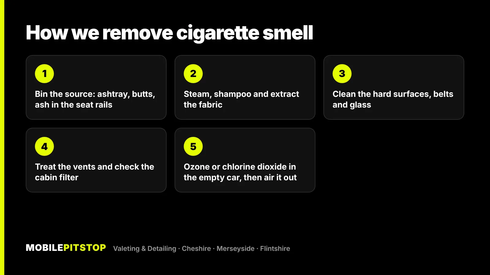
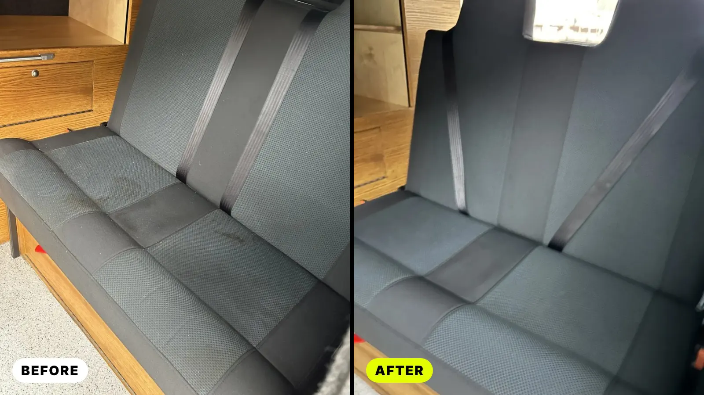
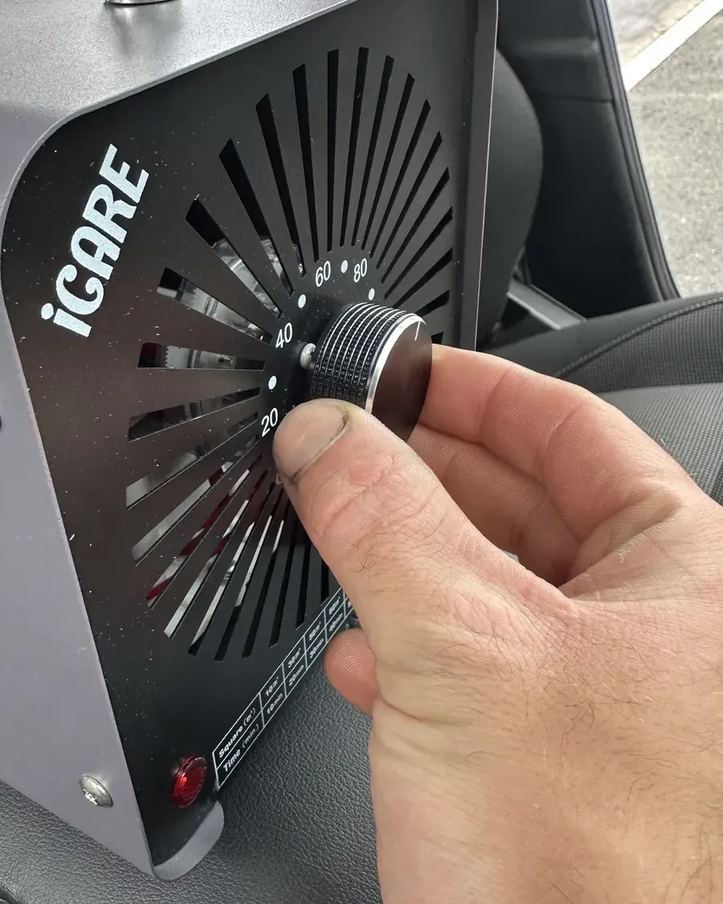

Cigarette smell in a car isn't floating in the air. It's stuck to the surfaces: a sticky film of tar and nicotine on the roof lining, the seat fabric, the carpets, the seatbelts, the glass and inside the vents. That's why an air freshener only covers it for a few days before it creeps back.
Getting rid of it means taking that residue out of the car, then treating whatever smell is left in the parts you can't scrub. You can make a real dent at home. A car that's been smoked in for years usually needs deep fabric cleaning and an ozone or chlorine dioxide treatment as well.
Below is why the smell sticks, what you can do yourself, where DIY runs out and how we deal with it on our jobs.
Smoke carries tiny particles of tar and other residue. In a small, closed cabin they settle on everything and soak into anything soft. Every cigarette adds another layer, and the smell comes off those layers whenever the car warms up or gets damp. That's why a smoker's car often smells worst on a warm day or after rain.
The places that hold the most:
An air freshener adds a stronger smell on top of the one you've got. It masks the odour, and does nothing about the residue causing it. Once the scent fades, the smoke smell is still there, sometimes mixed with the freshener into something worse.
The same goes for sprays that "neutralise" odours on contact. They can help in the air for a while, but they can't reach residue soaked into the roof lining or deep in the seat foam. To get rid of the smell you have to get rid of what's making it.
On a car that's only been smoked in now and then, this can be enough. On a heavy smoker's car it's a good start. Work through it in order, and pick a dry day so you can leave the doors open.
Be careful with the roof lining. It's glued to the roof panel, and soaking it can loosen the glue and make it sag. If it needs cleaning, use a lightly dampened cloth and a gentle cleaner, and don't scrub hard.
A note on ozone generators: they're sold online for home use, but ozone must only ever be used in an empty car, with no people or pets inside, and the car needs airing out properly afterwards. Ozone also doesn't replace cleaning. Run it in a dirty car and the smell can come back once the residue warms up again.
Home cleaning reaches the surfaces. It struggles with:
One honest point: if the car is still smoked in, the smell will build up again, however well it's been cleaned.
Our odour removal service is built around one idea: remove the cause first, then treat what's left. We choose the treatment to match the odour, and we do it at your home or workplace.



If the roof lining is badly stained, the headliner clean is available as an add-on to the Interior Deep Clean. If the car needs a full reset inside and out, an In & Out Deep Clean includes steam, shampoo and extraction of the seats, carpets, mats and boot.
Not sure what yours needs? Send us a few photos in daylight and tell us how long the car has been smoked in. We'll tell you straight which service fits, including when a cheaper one will do.
Buyers notice smoke smell within seconds of opening the door, and it's one of the quickest ways to put someone off a car. A spray-and-hope clean before a viewing usually doesn't fool anyone, because the smell comes back as the car warms up on the test drive.
If you're selling, have the smell dealt with before you take the photos and book viewings. If it has an ozone treatment, leave enough time afterwards for the car to air out fully. While you're at it, clean the inside of the glass and the roof lining, because yellowed glass and a stained headlining tell a buyer the same story the smell does.
The same applies to a lease or company car you're handing back. It's worth dealing with a smoked-in interior before the car goes back, not after.